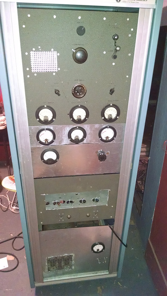

AM Transmitter

This transmitter is built to similar standards of a classic AM broadcast transmitter. It's to be used on the ham bands and has a single 4-400A modulated by 4 808 tubes.
This transmitter is built to similar standards of a classic AM broadcast transmitter. It's to be used on the ham bands and has a single 4-400A modulated by 4 808 tubes.